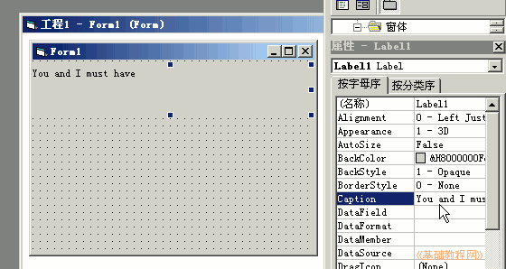
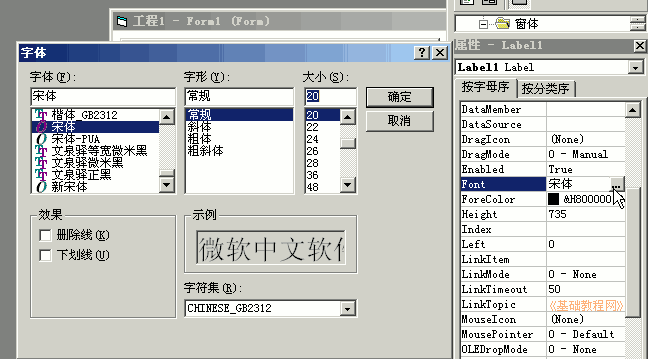
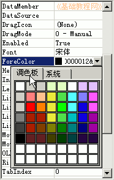
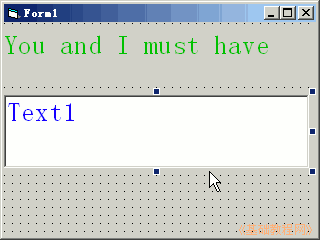
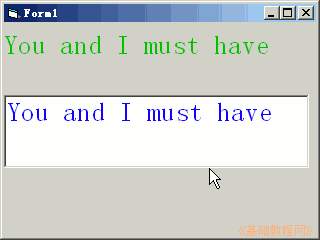

2011-2012 第一学期九年级 VB 教学课程设计
作者：TeliuTe 来源：基础教程网
四、设置属性 返回目录 下一课学习目标：学会修饰控件的颜色和字体；
注意事项：按照英文单词的字母来找；
1、设置属性
1）启动 VB6，点“打开”创建一个新的工程；
2）在左边工具箱里选择标签，在窗体中绘制一个标签；
3）在右边的属性窗口中，在 Caption 中输入 You and I must have；

4）再在下面找 Font，点击右边的省略号，将字号设为20；

5）再点下边的 ForeColor －调色板，选择深绿色；

6）同样绘制一个文本框，字号设为20号，颜色为深蓝色；

7）保存为“第四课”，然后运行程序，在文本框中输入句子；

课后记 2011-9-16 17:06：
进去前先要求一下，学习不能着急本节学习了设置属性的基础知识，如果你成功地完成了练习，请继续学习下一课内容；
本教程由86团学校TeliuTe制作|著作权所有
基础教程网：http://teliute.org/
美丽的校园……
转载和引用本站内容，请保留版权信息和本站链接。